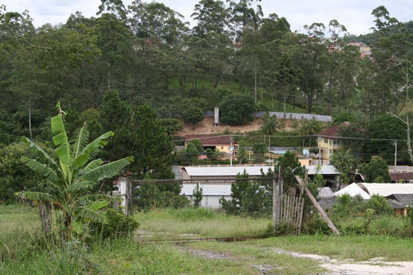

|
Agenda
As atividades da instituição são separadas da seguinte forma:
- "Terças Feiras - Visita do médico para acompanhamento dos internos
- "Sextas-Feiras - Visita da nutricionista para elaboração do cardápio semanal.
Por se tratar de uma instituição para idosos, a sala de TV e descanso(área verde) são de livre acesso para os internos, respeitando somente o horário estipulado.
|
 |